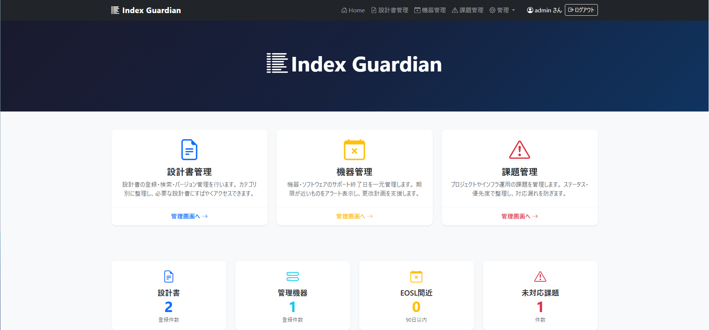

こんな課題に向いています
- 設計書や関連資料の保管場所が分散している
- 機器のEOSL期限を見落とさずに追いたい
- 課題を案件横断で整理して見通しを揃えたい
- 少人数でも属人化しにくい運用基盤を作りたい
Product
現場を知り尽くしたインフラエンジニアが作成した、インフラ運用向けの業務管理Webアプリケーションです。 インフラ運用に必須である[設計書管理] [機器管理] [EOSL管理] [課題管理]をまとめて扱えます。 個人・法人を問わず無料で利用でき、オフライン環境でも動作します。
Index Guardian は、設計書管理、機器管理、EOSL管理、課題管理をまとめて扱える システム運用者向けのアプリです。
情報が Excel、共有フォルダ、口頭に散りやすい運用を整理し、 少人数でも状態を追いやすい形に寄せられるよう設計しています。

システムのドキュメント管理にお悩みの企業様におすすめです。データの同期が取れるため、保守ベンダーとの連携にも最適です。
台帳と課題をまとめて確認できるため、更改計画や保守運用の土台づくりにも使えます。
管理者と一般ユーザーのロールを分けて運用できます。 管理者は設定変更やバックアップ、一般ユーザーは日常的な閲覧・更新作業を担当できます。
Index Guardian は無料で提供していますが、継続的な開発・保守・検証には 費用と時間がかかっています。もしお役に立てていれば、 任意で開発支援をご検討いただけると励みになります。
支援の有無で機能差や利用可否は変わりません。